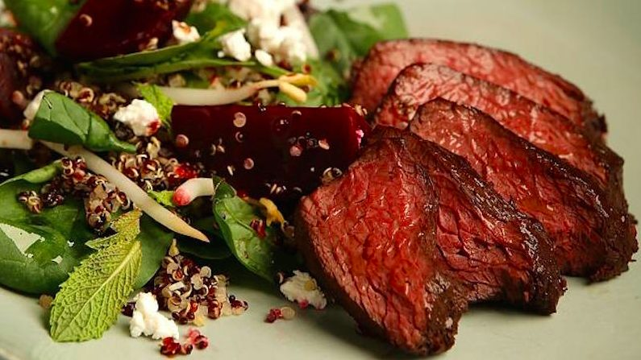
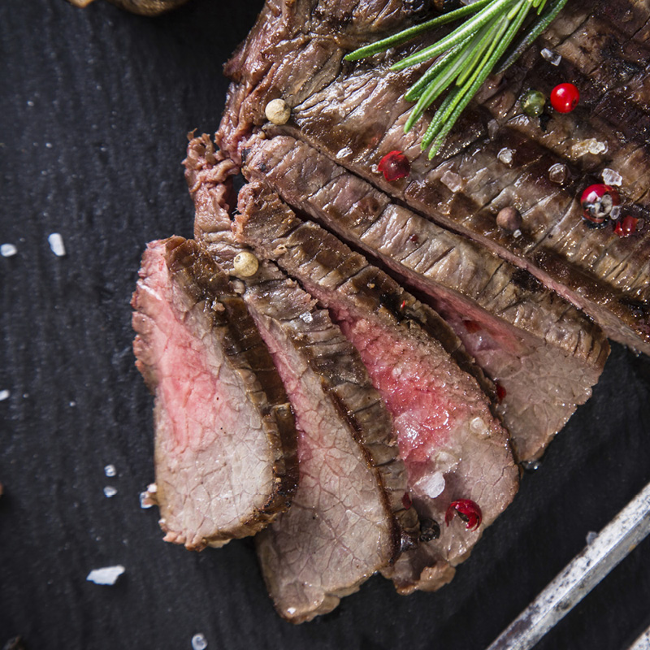
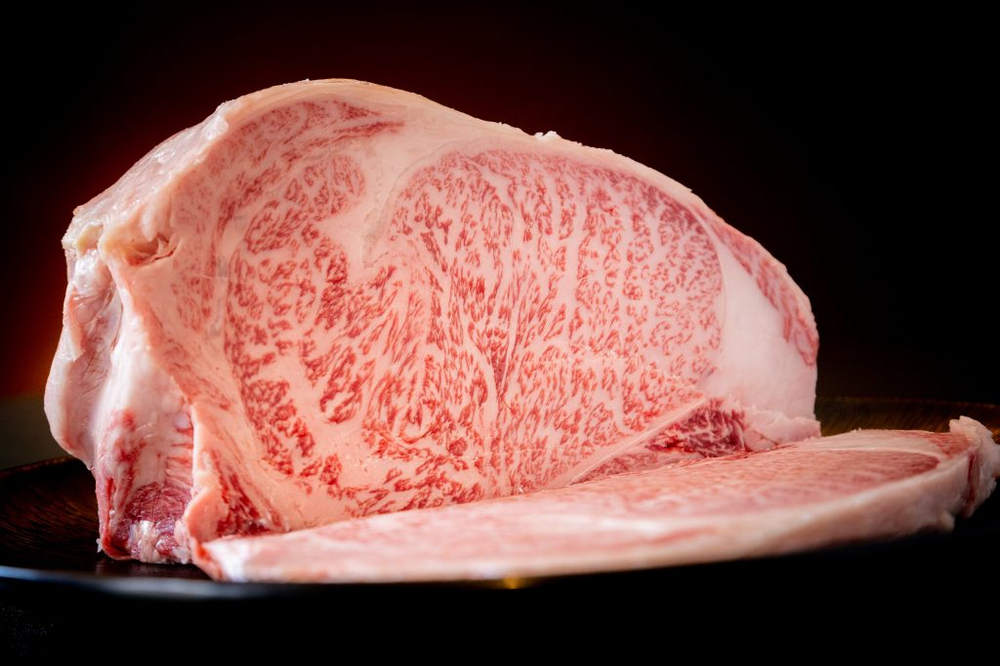

Ogni carne che serviamo viene selezionata con cura maniacale. Collaboriamo con allevatori e fornitori di fiducia in tutto il mondo per garantire qualita, tracciabilita e un sapore che parla da solo.

Esotica 🇿🇦Carne magra dal sapore dolce e leggermente selvatico. Ricca di proteine, povera di grassi.
La carne di Zebra e un'esperienza unica: tenerissima, dal profilo aromatico delicato con note che ricordano il manzo ma con un carattere tutto suo. Proviene da allevamenti sostenibili in Sud Africa.
Clicca per tornareSapore intenso e selvatico, estremamente magra. Una carne d'avventura dall'Australia.
Il canguro offre un sapore unico, robusto e terroso. Ricchissimo di ferro e quasi privo di grassi saturi. Ideale per chi cerca un'esperienza gastronomica fuori dall'ordinario.
Clicca per tornareDalla Scandinavia, un sapore delicato e raffinato con note di bosco nordico.
La renna vive libera nelle vastita artiche. La sua carne e morbida, dal gusto fine e leggermente dolce. Un vero lusso scandinavo, ricco di Omega-3 e vitamina B12.
Clicca per tornareElegante e raffinato, con retrogusto boschivo e note erbacee.
Il cervo europeo offre una carne nobile e saporita, magra ma incredibilmente tenera se trattata con rispetto. Perfetta per chi ama i sapori autentici della natura.
Clicca per tornare
Esotica 🇿🇦Sorprendentemente simile al manzo ma molto piu leggera. Quasi zero colesterolo.
Lo struzzo e la carne del futuro: altissimo contenuto proteico, bassissimo contenuto di grassi. Il sapore e morbido, avvolgente, e si presta a cotture rapide che ne esaltano la tenerezza.
Clicca per tornareAllevamento italiano di razza Wagyu. Marezzatura eccellente, sapore ricco.
Il Wagyu italiano unisce la genetica giapponese al terroir italiano. Il risultato e una carne dalla marezzatura splendida, sapore buroso e una tenerezza che si scioglie in bocca.
Clicca per tornare
Raro 🇯🇵Il marmo piu pregiato al mondo. Kobe +10, un'eccellenza assoluta.
Il Wagyu di Kobe e leggenda. Ogni morso e un'esplosione di umami, con una texture che si dissolve al palato. Selezioniamo solo esemplari con grado di marezzatura +10, il massimo assoluto.
Clicca per tornareGiovane femmina mai gravida. Carne tenera, succulenta e dal gusto pieno.
La scottona garantisce una marezzatura naturale e una tenerezza superiore. E il taglio perfetto per chi vuole il classico sapore italiano della carne alla brace, senza compromessi.
Clicca per tornareCube Roll danese, maturazione perfetta. Sapore intenso e persistente.
Il Cube Roll danese viene selezionato per la sua consistenza e sapore deciso. La maturazione controllata esalta le note burrose e il gusto pieno, ideale per la griglia.
Clicca per tornareRazza tedesca antica, carne dal carattere forte e dalla fibra compatta.
La prussiana e una razza poco conosciuta ma straordinaria. Fibra compatta, sapore profondo e una resistenza alla cottura che permette di esaltarne ogni sfumatura sulla brace.
Clicca per tornareOgni taglio ha la sua personalita. Noi li rispettiamo tutti.
Il re dei tagli. Tenero, magro, perfetto per cotture al sangue o media.
Saporita e succosa, con venature che la rendono ideale per la griglia.
Il nostro orgoglio: un assortimento dei migliori tagli, per condividere.
Il taglio segreto del maiale iberico. Marezzatura straordinaria.
Grass-fed irlandese, sapore intenso e autentico. Perfetto alla brace.
Filetto e controfiletto in un unico taglio scenografico.
Selezione artigianale di salumi della casa per aprire l'esperienza.
Vieni a trovarci e lasciati guidare nella scelta del taglio perfetto per te.